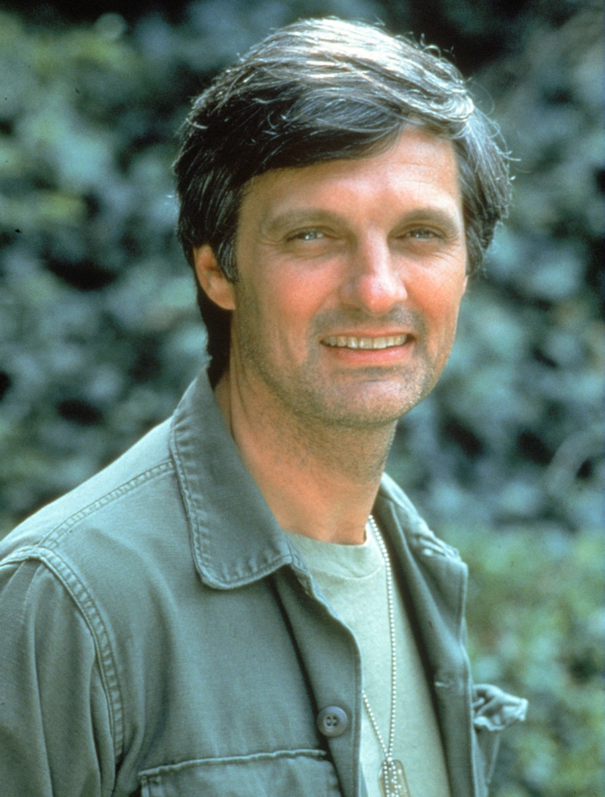

Alan Alda
Actor, author, activist, and more

Alan Alda as Benjamin Franklin "Hawkeye" Pierce on the set of M*A*S*H.
A timeline of Alda's life:
- 1936 - Born as Alphonso Joseph D'Abruzzo in NYC
- 1943 - Contracted polio at the age of 7
- 1950s - Began his acting career
- 1956 - Earned a Bachelor of Arts degree in English from Fordham University
- 1958 - Joined the Cleveland Play House with a grant from the Ford Foundation where he appeared in plays such as To Dorothy A Son, Heaven Come Wednesday, and Monique.
- 1964 - Played Felix the Owel in the world premier stage version of The Owl and The Pussycat at the ANTA Playhouse
- 1966 - Nominated for a Tony Award for his role as the musical The Apple Tree
- 1972-1983 - Played the role of Benjamin Franklin "Hawkeye" Pierce in the Korean War drama M*A*S*H. He was nominated for 21 emmys and won five. He wrote 19 episodes and directed 32, including the series finale Goodbye, Farewell and Amen which is still the most watched episode of any American broadcast network TV series.
- 1983 - Continued his acting career and started appearing in films created by his friend Woody Allen eventually reuniting with his M*A*S*H co-star David Ogden Stiers who played Charles Emmerson Winchester III
- 1993 - 2005 - Hosted the PBS show Scientific American Frontiers.
- 2005 - Published his first memoir titled Never Have Your Dog Stuffed: and Other Things I've Learned
- 2018 - Announced on CBS This Morning he had been diagnosed with Parkinson's disease three years earlier
At time you have to leave the city of your comfort to go into the wilderness of your intuition. What you'll discover will be wonderful. What you'll discover is yourself.Alan Alda Read more about Alan Alda here